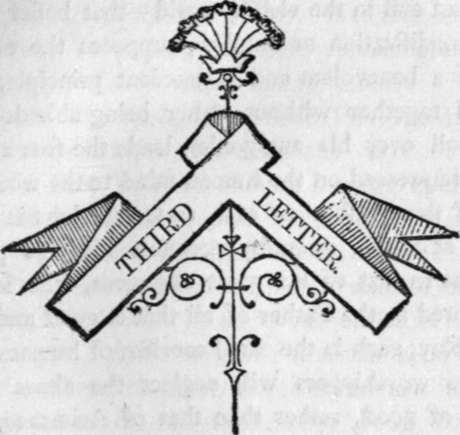

Third Letter
Description
This section is from the book "Letters On Demonology And Witchcraft", by Walter Scott. Also available from Amazon: Letters On Demonology & Witchcraft.
Third Letter
Creed of Zoroaster—received partially into most Heathen Nations —Instances among the Celtic Tribes of Scotland—Beltane Feast—Gudeman's Croft—Such abuses admitted into Christianity after the earlier Ages of the Church—Law of the Romans against Witchcraft—Roman Customs survive the fall of their Religion—Instances—Demonology of the Northern Barbarians—Nicksas—Bhar-geist— Correspondence between the Northern and Roman Witches—The power of Fascination ascribed to the Sorceresses—Example from the Eyrbiggia Saga —The Prophetesses of the Germans—The Gods of Valhalla not highly regarded by their Worshippers—Often defied by the Champions—Demons of the North—Story of Assueit and Asmund—Action of Ejectment against Spectres—Adventure of a Champion with the Goddess Freya—Conversion qf the Pagans of Iceland to Christianity—Northern Superstitions mixed with those of the Celts—Satyrs of the North—Highland Ourisk—Meming the Satyr.
THE creed of Zoroaster, which naturally occurs to unassisted reason as a mode of accounting for the mingled existence of good and evil in the visible world—that belief which, in one modification or another, supposes the co-existence of a benevolent and malevolent principle, which contend together without either being able decisively to prevail over his antagonist, leads the fear and awe deeply impressed on the human mind to the worship a? well of the Author of evil, so tremendous in all the effects of which credulity accounts him the primary cause, as to that of his great opponent, who is loved and adored as the Father of all that is good and bountiful. Nay, such is the timid servility of human nature, that the worshippers will neglect the altars of the Author of good, rather than that of Arimanes, trusting with indifference to the well-known mercy of the one, while they shrink from the idea of irritating the vengeful jealousy of the awful Father of evil.
The Celtic tribes, by whom, under various denominations, Europe seems to have been originally peopled, possessed, in common with other savages, a natural tendency to the worship of the Evil principle. They did not, perhaps, adore Arimanes under one sole name, or consider the maligant divinities as sufficiently powerful to undertake a direct struggle with the more benevolent gods ; yet they thought it worth while to propitiate them by various expiatory rites and prayers, that they, and the elementary tempests, which they conceived to be under their direct command, might be merciful to suppliants who had acknowledged then-power, and deprecated their vengeance.
Remains of these superstitions might be traced till past the middle of the last century, though fast becoming obsolete, or passing into mere popular customs of the country, which the peasantry observe, without thinking of their origin. About 1769, when Mr. Pennant made his tour, the ceremony of the Baaltein, Beltane, or First of May, though varying in different districts of the Highlands, was yet in strict observance ; and the cake, which was then baken with scrupulous attention to certain rites and forms, was divided into fragments, which were formally dedicated to birds or beasts of prey, that they, or rather the being whose agents they were, might spare the flocks and herds.*
Another custom of similar origin lingered late among us. In many parishes of Scotland there was suffered to exist a certain portion of land, called the Gudemans Croft, which was never ploughed or cultivated, but suffered to remain waste, like the Temenos of a pagan temple. Though it was not expressly avowed, no one doubted that the goodman's croft was set apart for some evil being; in fact, that it was the portion of the arch-fiend himself, whom our ancestors distinguished by a name which, while it was generally understood, could not, it was supposed, be offensive to the stern inhabitant of the regions of despair. This was so general a custom that the Church published an ordinance against it as an impious and blasphemous usage.
* Bee Pennant's Scottish Tonr, vol. i. p. 111. The traveller mentions that some.festival of the same kind was, in his time, observed in Gloucestershire.
This singular custom sunk before the efforts of the clergy in the 17th century; but there must still be many alive who in childhood have been taught to look with wonder on knolls and patches of ground left uncultivated, because, whenever a ploughshare entered the soil, the elementary spirits were supposed to testify their displeasure by storm and thunder. Within our own memory, many such places, sanctified to barrenness by some favourite popular superstition, existed, both in Wales and Ireland, as well as in Scotland; but the high price of agricultural produce during the late war renders it doubtful if a veneration for greybearded superstition has suffered any one of them to remain un-desecrated. For the same reason, the mounts called Sith Bhruaith were respected, and it was deemed unlawful and dangerous to cut wood, dig earth and stones, or otherwise disturb them.*
Now, it may at first sight seem strange that the Christian religion should have permitted the existence of such gross and impious relics of heathenism in a land where its doctrines had obtained universal credence. But this will not appear so wonderful when it is recollected that the original Christians under the heathen emperors were called to conversion by the voice of apostles and saints, invested for the purpose with miraculous powers, as well of language, for communicating their doctrines to the Gentiles, as of cures, for the purpose of authenticating their mission. These converts must have been in general such elect persons as were effectually called to make part of the infant church ; and when hypocrites ventured, like Ananias and Sapphira, to intrude themselves into so select an association, they were liable, at the Divine pleasure, to be detected and punished. On the contrary, the nations who were converted after Christianity had become the religion of the empire, were not brought within the pale upon such a principle of selection as when the church consisted of a few individuals, who had, upon conviction, exchanged the errors of the pagan religion for the dangers and duties incurred by those who embraced a faith inferring the self-denial of its votaries, and at the same time exposing them to persecution. When the cross became triumphant, and its cause no longer required the direction of inspired men, or the evidence of miracles, to compel reluctant belief, it is evident that the converts who thronged into the fold must have, many of them, entered because Christianity was the prevailing faith—many because it was the church, the members of which rose most readily to promotion—many, finally, who, though content to resign the worship of pagan divinities, could not, at once, clear their minds of heathen ritual and heathen observances, which they inconsistently laboured to unite with the more simple and majestic faith that disdained such impure union. If this was the case, even in the Roman empire, where the converts to the Christian faith must have found, among the earlier members of the church, the readiest and the soundest instruction, how much more imperfectly could those foreign and barbarous tribes receive the necessary religious information from some zealous and enthusiastic preacher, who christened them by hundreds in one day ? Still less could we imagine them to have acquired a knowledge of Christianity, in the genuine and perfect sense of the word, when, as was frequently the case, they only assumed the profession of the religion that had become the choice of some favoured chief, whose example they followed in mere love and loyalty, without, perhaps, attaching more consequence to a change of religion than to a change of garments. Such hasty converts, professing themselves Christians, but neither weaned from their old belief nor instructed in their new one, entered the sanctuary without laying aside the superstitions with which their young minds had been imbued ; and accustomed to a plurality of deities, some of them, who bestowed unusual thought on the matter, might be of opinion that, in adopting the God of the Christians they had not renounced the service of every inferior power.
Continue to: